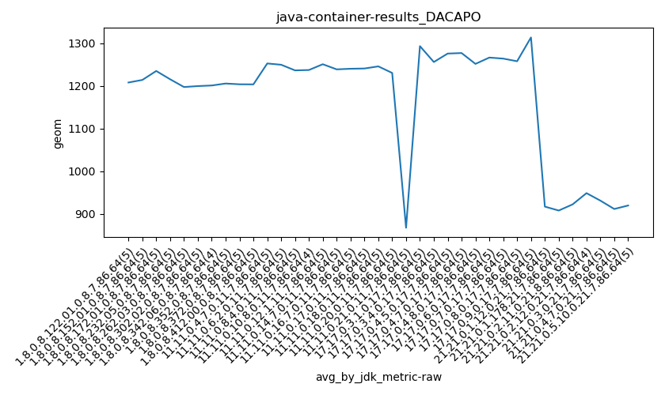

java- DACAPO
Context at bottom
/home/jvanek/git/benchmarks-in-nested-virtualisation-toolchain/final_results/container_results/container-results_JMH
java-
DACAPO
/home/jvanek/git/benchmarks-in-nested-virtualisation-toolchain/final_results/container_results/container-results_RADARGUNs1
java-
DACAPO
/home/jvanek/git/benchmarks-in-nested-virtualisation-toolchain/final_results/container_results/container-results_DACAPO
java-
DACAPO
container-results_DACAPO
final score
Expected number of java- JDKs: 19
1st avgmed_alljdks_metric:
/home/jvanek/git/benchmarks-in-nested-virtualisation-toolchain/final_results/result_processing.py /home/jvanek/git/benchmarks-in-nested-virtualisation-toolchain/final_results/container_results/container-results_DACAPO geom False
values: [1242, 1170, 1219, 1207, 1202, 1199, 1213, 1192, 1226, 1240, 1230, 1241, 1269, 1222, 1213, 1180, 1232, 1245, 1201, 1220, 1184, 1205, 1193, 1202, 1203, 1183, 1204, 1167, 1229, 1215, 1223, 1204, 1209, 1168, 1268, 1230, 1254, 1234, 1277, 1228, 1239, 1322, 1209, 1250, 1229, 1253, 1242, 1256, 1202, 1257, 1211, 1253, 1228, 1253, 1252, 1233, 1203, 1313, 1277, 1263, 1189, 1204, 1261, 1224, 1260, 1247, 1252, 1218, 1253, 1295, 1292, 1338, 1288, 1292, 1264, 1265, 1257, 1202, 1295, 1298, 1220, 1276, 1290, 1281, 1298, 1229, 1307, 1270, 1248, 1273, 1234, 1251, 1252]

Expected number of iterations: 5
final number of values: 93 out of 95
Pass rate: 97.9%
values: (1167, 1338, 1238.8279569892472, 1234)

** accuracy from all jdks and runs
more is better
MIN: 1167
MAX: 1338
AVG: 1238.8279569892472
MED: 1234
Relative differences 1:
MIN-MAX: 13.0 %
MIN-AVG: 6.0 %
MIN-MED: 5.0 %
MAX-MIN: -15.0 %
MAX-AVG: -8.0 %
MAX-MED: -8.0 %
AVG-MED: -0.0 %
stored to java-.properties. sort | uniq that!
2nd avgmed_by_jdk_metric:
values: [1208.0, 1214.0, 1235.0, 1215.6, 1197.4, 1199.6, 1201.0, 1252.6, 1249.6, 1236.4, 1237.25, 1250.8, 1238.8, 1240.2, 1293.2, 1256.0, 1275.8, 1277.0, 1251.6]

values: [1207, 1213, 1230, 1220, 1202, 1204, 1209, 1254, 1239, 1242, 1253, 1252, 1261, 1247, 1292, 1264, 1290, 1281, 1251]

values: (1197.4, 1293.2, 1238.4131578947367, 1238.8)
values: (1202, 1292, 1242.6842105263158, 1247)
** accuracy from all jdks where runs were avged
more is better
MIN: 1197.4
MAX: 1293.2
AVG: 1238.4131578947367
MED: 1238.8
Relative differences 1:
MIN-MAX: 7.0 %
MIN-AVG: 3.0 %
MIN-MED: 3.0 %
MAX-MIN: -8.0 %
MAX-AVG: -4.0 %
MAX-MED: -4.0 %
AVG-MED: 0.0 %
stored to java-.properties. sort | uniq that!
** accuracy from all jdks where runs were medianed
more is better
MIN: 1202
MAX: 1292
AVG: 1242.6842105263158
MED: 1247
Relative differences 1:
MIN-MAX: 7.0 %
MIN-AVG: 3.0 %
MIN-MED: 4.0 %
MAX-MIN: -7.0 %
MAX-AVG: -4.0 %
MAX-MED: -4.0 %
AVG-MED: 0.0 %
stored to java-.properties. sort | uniq that!
/home/jvanek/git/benchmarks-in-nested-virtualisation-toolchain/final_results/container_results/container-results_SPECJBB
java-
DACAPO
/home/jvanek/git/benchmarks-in-nested-virtualisation-toolchain/final_results/container_results/container-results_RADARGUNs3
java-
DACAPO
/home/jvanek/git/benchmarks-in-nested-virtualisation-toolchain/final_results/container_results/container-results_J2DBENCH
java-
DACAPO
pass rates:
container-results_DACAPO=97.9%
Context:
- container_results
- DACAPO